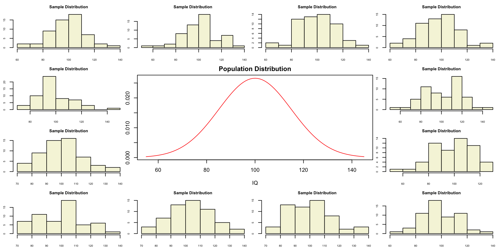
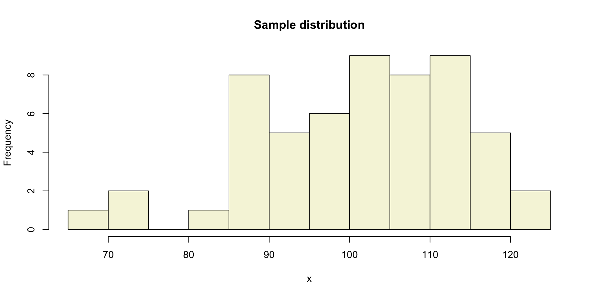
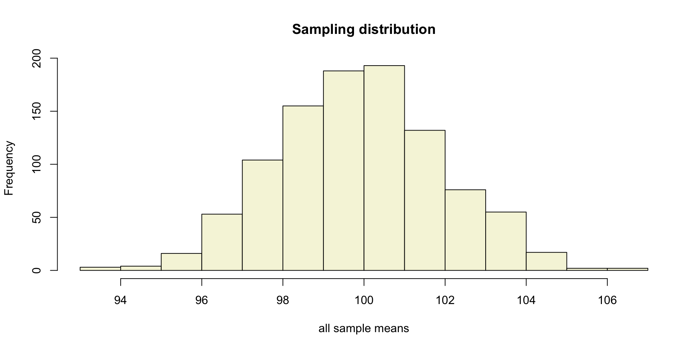
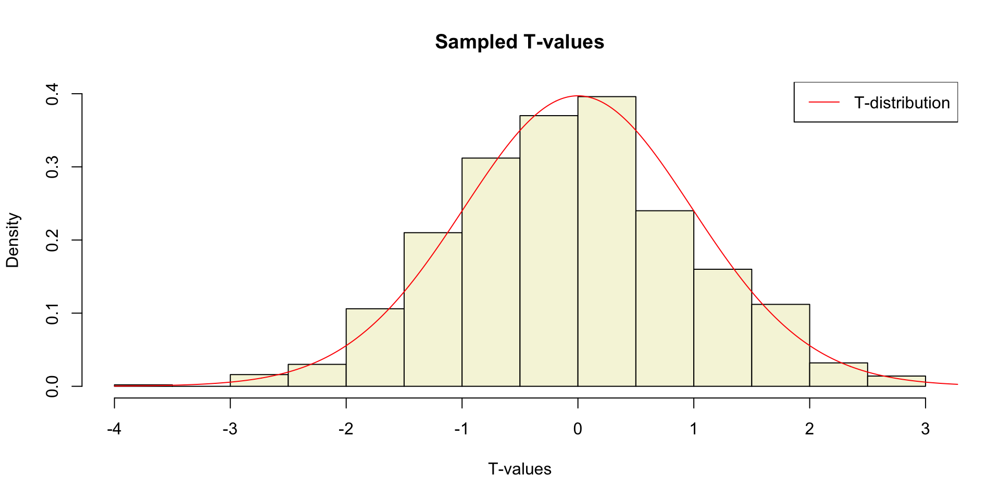
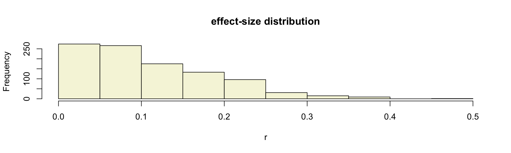
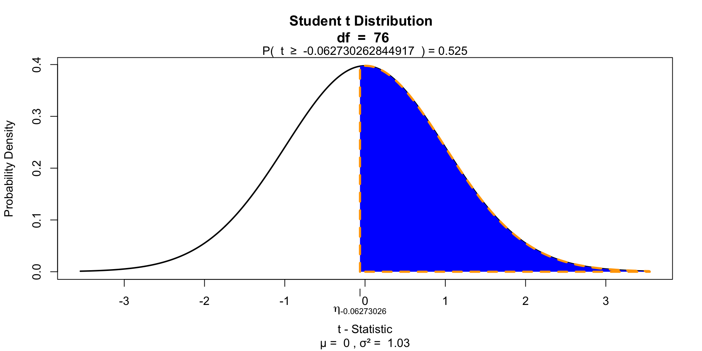

layout(matrix(c(2:6,1,1,7:8,1,1,9:13), 4, 4))
n = 56 # Sample size
df = n - 1 # Degrees of freedom
mu = 100
sigma = 15
IQ = seq(mu-45, mu+45, 1)
par(mar=c(4,2,2,0))
plot(IQ, dnorm(IQ, mean = mu, sd = sigma), type='l', col="red", main = "Population Distribution")
n.samples = 12
for(i in 1:n.samples) {
par(mar=c(2,2,2,0))
hist(rnorm(n, mu, sigma), main="Sample Distribution", cex.axis=.5, col="beige", cex.main = .75)
}T-distribution and the
One-sample t-test
Klinkenberg
University of Amsterdam
20 sep 2022
T-distribution
Gosset

In probability and statistics, Student’s t-distribution (or simply the t-distribution) is any member of a family of continuous probability distributions that arises when estimating the mean of a normally distributed population in situations where the sample size is small and population standard deviation is unknown.
In the English-language literature it takes its name from William Sealy Gosset’s 1908 paper in Biometrika under the pseudonym “Student”. Gosset worked at the Guinness Brewery in Dublin, Ireland, and was interested in the problems of small samples, for example the chemical properties of barley where sample sizes might be as low as 3.
Source: Wikipedia
Population distribution
Population distribution

A sample
Let’s take one sample from our normal populatiion and calculate the t-value.
[1] 114.13463 107.95916 89.09093 116.10391 120.26082 104.52198 86.24389
[8] 111.36112 87.03261 100.58121 103.52284 111.63226 107.57684 95.92652
[15] 74.69576 118.64357 114.47544 120.26196 98.64858 102.74980 98.42689
[22] 89.63145 112.66852 100.77783 81.64104 91.25104 105.38065 70.12356
[29] 110.28996 93.96758 88.98002 105.75043 117.54479 94.83770 106.43370
[36] 95.08152 99.35754 111.11770 115.36743 88.98935 93.46879 105.63066
[43] 96.48636 100.86305 69.98292 112.60834 88.24452 101.68415 119.64252
[50] 109.29581 108.85863 101.90785 114.14517 104.65793 85.27835 92.06704A sample

More samples
let’s take more samples.
Mean and SE for all samples
Sampling distribution
Of the mean
Sampling distribution

T-statistic
\[T_{n-1} = \frac{\bar{x}-\mu}{SE_x} = \frac{\bar{x}-\mu}{s_x / \sqrt{n}}\]
So the t-statistic represents the deviation of the sample mean \(\bar{x}\) from the population mean \(\mu\), considering the sample size, expressed as the degrees of freedom \(df = n - 1\)
t-value
\[T_{n-1} = \frac{\bar{x}-\mu}{SE_x} = \frac{\bar{x}-\mu}{s_x / \sqrt{n}}\]
Calculate t-values
\[T_{n-1} = \frac{\bar{x}-\mu}{SE_x} = \frac{\bar{x}-\mu}{s_x / \sqrt{n}}\]
mean.x.values mu se.x.values t.values
[995,] 101.34411 100 2.030993 0.6618012
[996,] 97.86312 100 1.822674 -1.1723892
[997,] 98.30666 100 1.683044 -1.0061203
[998,] 95.70971 100 1.782760 -2.4065461
[999,] 101.20429 100 2.104778 0.5721683
[1000,] 100.25763 100 1.909033 0.1349511Sampled t-values
What is the distribution of all these t-values?
Sampled t-values

T-distribution
So if the population is normaly distributed (assumption of normality) the t-distribution represents the deviation of sample means from the population mean (\(\mu\)), given a certain sample size (\(df = n - 1\)).
The t-distibution therefore is different for different sample sizes and converges to a standard normal distribution if sample size is large enough.
The t-distribution is defined by:
\[\textstyle\frac{\Gamma \left(\frac{\nu+1}{2} \right)} {\sqrt{\nu\pi}\,\Gamma \left(\frac{\nu}{2} \right)} \left(1+\frac{x^2}{\nu} \right)^{-\frac{\nu+1}{2}}\!\]
where \(\nu\) is the number of degrees of freedom and \(\Gamma\) is the gamma function.
Source: wikipedia
One or two sided
Two sided
- \(H_A: \bar{x} \neq \mu\)
One sided
- \(H_A: \bar{x} > \mu\)
- \(H_A: \bar{x} < \mu\)
Effect-size
The effect-size is the standardised difference between the mean and the expected \(\mu\). In the t-test effect-size is expressed as \(r\).
\[r = \sqrt{\frac{t^2}{t^2 + \text{df}}}\]
Effect-sizes
We can also calculate effect-sizes for all our calculated t-values. Under the assumption of \(H_0\) the effect-size distribution looks like this.
mean.x.values mu se.x.values t.values r
[995,] 101.34411 100 2.030993 0.6618012 0.08888405
[996,] 97.86312 100 1.822674 -1.1723892 0.15614586
[997,] 98.30666 100 1.683044 -1.0061203 0.13443374
[998,] 95.70971 100 1.782760 -2.4065461 0.30865469
[999,] 101.20429 100 2.104778 0.5721683 0.07692257
[1000,] 100.25763 100 1.909033 0.1349511 0.01819379Effect-size distribution
Cohen (1988)
- Small: \(0 \leq .1\)
- Medium: \(.1 \leq .3\)
- Large: \(.3 \leq .5\)
Power
- Strive for 80%
- Based on know effect size
- Calculate number of subjects needed
- Use G*Power to calculate

Alpha Power
T = seq(-3,6,.01)
N = 45
E = 2
# Set plot
plot(0,0,
type = "n",
ylab = "Density",
xlab = "T",
ylim = c(0,.5),
xlim = c(-3,6),
main = "T-Distributions under H0 and HA")
critical_t = qt(.05,N-1,lower.tail=FALSE)
# Alpha
range_x = seq(critical_t,6,.01)
polygon(c(range_x,rev(range_x)),
c(range_x*0,rev(dt(range_x,N-1,ncp=0))),
col = "grey",
density = 10,
angle = 90,
lwd = 2)
# Power
range_x = seq(critical_t,6,.01)
polygon(c(range_x,rev(range_x)),
c(range_x*0,rev(dt(range_x,N-1,ncp=E))),
col = "grey",
density = 10,
angle = 45,
lwd = 2)
lines(T,dt(T,N-1,ncp=0),col="red", lwd=2) # H0 line
lines(T,dt(T,N-1,ncp=E),col="blue",lwd=2) # HA line
# Critical value
lines(rep(critical_t,2),c(0,dt(critical_t,N-1,ncp=E)),lwd=2,col="black")
text(critical_t,dt(critical_t,N-1,ncp=E),"critical T-value",pos=2, srt = 90)
# H0 and HA
text(0,dt(0,N-1,ncp=0),expression(H[0]),pos=3,col="red", cex=2)
text(E,dt(E,N-1,ncp=E),expression(H[A]),pos=3,col="blue",cex=2)
# Mu H0 line
lines(c(0,0),c(0,dt(0,N-1)), col="red", lwd=2,lty=2)
text(0,dt(0,N-1,ncp=0)/2,expression(mu),pos=4,cex=1.2)
# Mu HA line
lines(c(E,E),c(0,dt(E,N-1,ncp=E)),col="blue",lwd=2,lty=2)
text(E,dt(0,N-1,ncp=0)/2,expression(paste(mu)),pos=4,cex=1.2)
# t-value
lines( c(critical_t+.01,6),c(0,0),col="green",lwd=4)
# Legend
legend("topright", c(expression(alpha),'POWER'),density=c(10,10),angle=c(90,45))Alpha Power

One-sample t-test
IQ next to you

http://goo.gl/T6Lo2s
Models
\[\text{outcome} = \text{model} + \text{error}\]
Compare sample mean
We use the one-sample t-test to compare the sample mean \(\bar{x}\) to the population mean \(\mu\).
Let’s take a different sample and calculate the mean of this sample.
mu = 120
n = length(IQ.next.to.you)
x = IQ.next.to.you
mean_x = mean(x, na.rm = TRUE)
sd_x = sd(x, na.rm = TRUE)
cbind(n, mean_x, sd_x) n mean_x sd_x
[1,] 77 119.9091 12.71673Does this mean, differ significantly from the population mean \(\mu = 120\)?
Hypothesis
Null hypothesis
- \(H_0: \bar{x} = \mu\)
Alternative hypothesis
- \(H_A: \bar{x} \neq \mu\)
- \(H_A: \bar{x} > \mu\)
- \(H_A: \bar{x} < \mu\)
Assumptions
- Normal samples distribution
- Measurement level
- Interval
- Ratio
T-statistic
\[T_{n-1} = \frac{\bar{x}-\mu}{SE_x} = \frac{\bar{x}-\mu}{s_x / \sqrt{n}} = \frac{119.91 - 120 }{12.72 / \sqrt{77}}\]
So the t-statistic represents the deviation of the sample mean \(\bar{x}\) from the population mean \(\mu\), considering the sample size.
Type I error
To determine if this t-value significantly differs from the population mean we have to specify a type I error that we are willing to make.
- Type I error / \(\alpha\) = .05
P-value one sided
Finally we have to calculate our p-value for which we need the degrees of freedom \(df = n - 1\) to determine the shape of the t-distribution.
P-value one sided

P-value two sided

Effect-size
\[r = \sqrt{\frac{t^2}{t^2 + \text{df}}}\]
End
Contact


Scientific & Statistical Reasoning